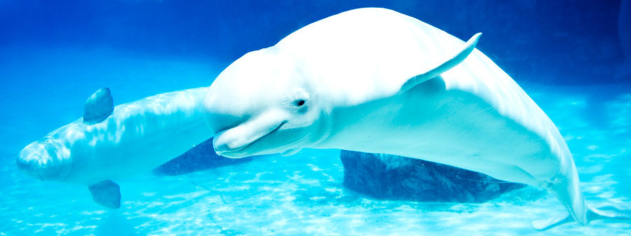

Belugas
The Arctic Whale
Belugas are some of the cutest, most underrated ocean animals. No one understands why they have not been featured on popular animated movies like Finding Nemo, or other parts of mainstream pop-culture like dolphins or narwhals. They are so unique and adorable. My secret dream is to give a beluga a hug, or a stuffed animal beluga that is life sized.